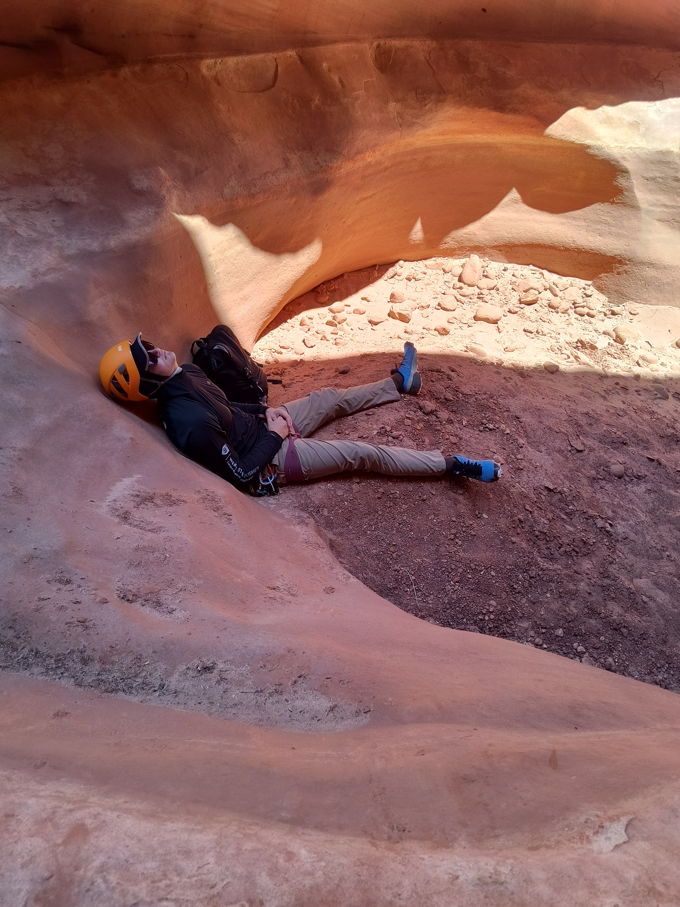

Introduction to CSS Grid
In a bustling city, Mia found an old pair of red shoes in a thrift store. Curious, she slipped them on and felt an electric tingle. Suddenly, the world transformed—buildings danced, and streets sang. With each step, she discovered hidden gardens and vibrant murals. The shoes led her to a forgotten park, where laughter and joy bubbled up from the ground. As the sun set, Mia realized these shoes held magic, reminding her of the adventure in every journey.
Ponies
In a sunlit meadow, five playful ponies raced, their manes flowing like rainbows. They discovered a hidden pond, splashing joyfully, forging an unbreakable bond beneath the sparkling sky. Pure bliss!
Rocks
Amidst the quiet forest, a small, smooth rock sat, watching seasons change. One day, a child picked it up, marveling at its colors, unknowingly sparking a lifelong love for nature.
Key Concepts of CSS Grid
- Cowboys: Iconic franchise with a rich history and passionate fanbase.
- Patriots: Dominant force under Bill Belichick and Tom Brady era.
- Packers: Legendary team with storied tradition and loyal supporters.
- Steelers: Gritty, tough defense and six Super Bowl championships achieved.
- 49ers: Historic success with Hall of Fame players and championships.
- Dolphins: Classic franchise known for its perfect season in 1972.
- Ravens: Strong defense and two Super Bowl victories in franchise history.
- Chiefs: Explosive offense led by Patrick Mahomes and recent championsh
- Seahawks: Fierce fans and a relentless defense known as “Legion of Boom.”
- Vikings: Four-time Super Bowl contenders seeking elusive championship victory.
- Saints: Resilient team with passionate fans and recent Super Bowl glory.
- Rams: High-powered offense and a recent Super Bowl championship.
- Buccaneers: Rejuvenated with Tom Brady, capturing recent Super Bowl title.
- Bills: Dedicated fanbase and a strong playoff-contending team recently.
- Falcons: High-scoring offense with a heart-wrenching Super Bowl history.
- Bengals: Rising team led by Joe Burrow, reaching recent Super Bowl.
- Bears: Historic franchise known for defense and passionate fan loyalty.
- Eagles: Underdogs with a passionate fanbase and a Super Bowl win.
- Broncos: Legendary quarterbacks and three Super Bowl victories throughout history.
- Cardinals: Longstanding franchise with a commitment to building competitive teams.
Burgers
At Gracie's Diner, the aroma of sizzling patties wafted through the air. Every Friday, locals gathered for the “Ultimate Burger Challenge.” This week, Max bravely took it on. With layers of cheese, crispy bacon, and spicy sauce, he tackled the towering creation. Laughter erupted as he took his final bite, triumphantly raising his hands. The burger won, but friendship prevailed.
A basic media query might look like this:
Water Bottles
In a bustling office, Sarah kept her vibrant water bottle on her desk, a daily reminder to stay hydrated amidst the chaos of deadlines. One afternoon, a new intern, Alex, admired its quirky design and asked about her secret to staying focused. Intrigued, Sarah shared tips on hydration and energy, leading to an impromptu water challenge. Soon, colleagues gathered around, showcasing their own colorful bottles. Laughter and chatter filled the room as they compared designs and shared stories about their hydration journeys. In that moment, a simple water bottle transformed into a symbol of camaraderie, reminding them all that a little fun could spark connection in even the busiest days.
Pingpong
In a dimly lit garage, Jake and Sam faced off in their weekly ping pong match. The sound of the ball echoed as they traded swift volleys, laughter mingling with competitive banter. Sweat glistened on their brows, each point igniting their playful rivalry. Just as Jake prepared for a fierce serve, the ball slipped from his hand, bouncing awkwardly. Both burst into laughter, and in that moment, they knew that their friendship was the real victory, regardless of the score.